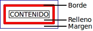

Caja de formato
 Cada
elemento HTML colocado dentro de un documento queda contenido por una
caja que lo rodea que, aunque es invisible, tiene propiedades que
podemos codificar para variar la presentación. El espacio que rodea a
cada elemento se configura mediante los bordes, los márgenes y el
relleno.
Campo de acción de márgenes, bordes y rellenos
El relleno es la distancia entre el contenido y el borde y se controla mediante la propiedad padding.Los bordes, cuando existen, se dibujan rodeando la zona de relleno y quedan definidos por su grosor, color y tipo de línea.
Los márgenes ocupan la zona exterior de la caja y definen la distancia entre el borde y la caja exterior.
Para cada uno de los tres elementos puede tratarse de forma independiente la parte superior, inferior, izquierda y derecha.
Relleno
El espacio de relleno se mide por unidades de distancia o por un porcentaje de incremento o decremento. El conjunto de propiedades es el siguiente:- padding-top.-
- padding-bottom.-
- padding-left.-
- padding-right.-
- padding.-
Bordes
A cada elemento HTML se le puede definir un borde con las siguientes propiedades fundamentales: grosor, tipo de línea y color.El grosor se configura mediante las propiedades: border-top-width, border-bottom-width, border-right-width, border-left-width y border-width. Además de los valores conocidos, estas propiedades pueden tener como valor: thin (delgado), medium (medio) y thick (grueso).
Para definir el tipo de línea (estilo del borde) se utilizan las propiedades: border-top-style, ..., boder-style. Los valores que se pueden asignar a estas propiedades son:
- none o hidden.- sin línea.
- dotted.- linea de puntos.
- dashed.- línea de guiones.
- double.- línea doble.
- groove.- línea tipo surco.
- inset.- bajorelieve en dos tonos.
- outset.- sobrerelieve en dos tonos.
- ridge.- línea tipo relieve.
- solid.- línea entera.
Existe un conjunto de propiedades border que permite configurar las tres propiedades anteriores, con el formato:
border: border_width border_style border_color
Las propiedades de este conjunto son: border-top, ..., border.
Un ejemplo sería:
p {border: thin dashed red;}
Existen dos propiedades relacionadas con los bordes pero que se utilizan principalmente con los elementos de las tablas y que ya han sido vistos anteriormente: border-spacing (espacio entre celdas) y border-collapse (permite solapar bordes contiguos).
Márgenes
El margen es la zona entre la caja exterior del elemento y el borde. Las propiedades que lo configuran son: margin-top, ..., margin. Un ejemplo:p {margin: 5px;}
Contornos dinámicos
Los contornos son elementos adicionales que existen alrededor de un elemento y que permiten resaltarlo. El uso más frecuente de los contornos es para indicar que el elemento tiene el foco (pseudo-clase :focus).El aspecto de los contornos es homogéneo para los cuatro lados, no se pueden individualizar. Las propiedades de configuración son:
- outline-color.- el color.
- outline-style.- estilo o tipo de línea.
- outline-width.- grosor de la línea.
outline: outline-color outline-style outline-width;
Un ejemplo:
p {outline: red dashed thick;}
Bordes curvos
La propiedad border-radius permite definir las curvas de los bordes de los elementos. En la definición se utiliza el radio del cuarto de elipse utilizada para redondear cada esquina del elemento, de la forma:elemento {border-tb-rl-radius: x y;}
donde:
- elemento.- elemento al que se aplica el estilo.
- tb.- puede ser top o bottom.
- rl.- right o left.
- x y.- indican las longitudes de los radios de la elipse correspondiente.
div {border-top-left-radius: 30px 30px;}
El modo abreviado con la propiedad border-radius permite definir las cuatro esquinas con una única propiedad:
elemento {border-radius: izqsup dersup derinf izqinf;}
Por ejemplo, el borde de la lista anterior tiene como código:
th {border: 3px solid blue;
border-radius: 20px 20px 20px 20px;
}